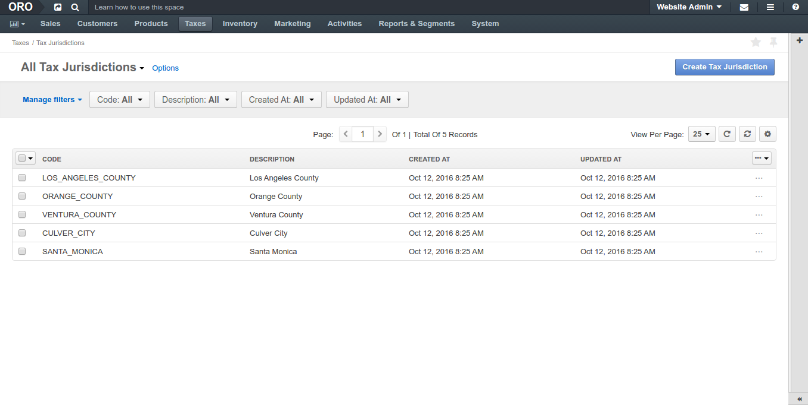
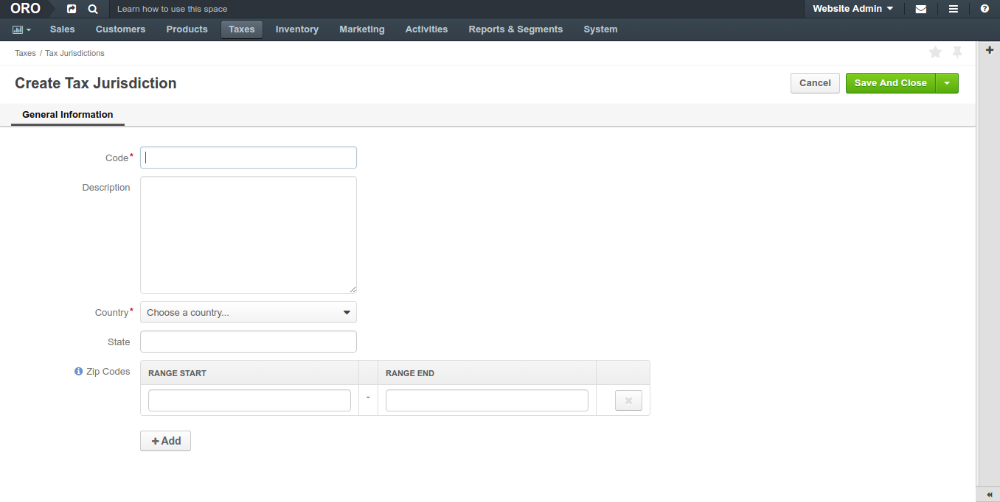
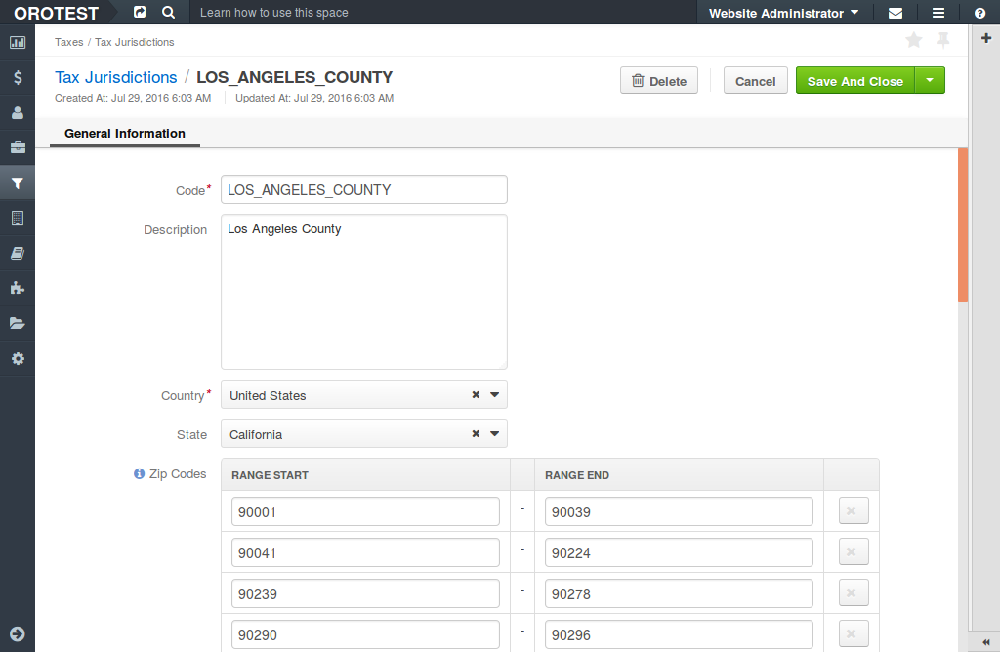

Tax Jurisdiction is a georgaphical address of the area that is governed by the same tax laws and regulations and that requires a dedicated set of tax calculation rules in OroCommerce: the tax rates for taxable/tax-exempt types of customers and products.
The sections below provide guidance on managing tax jurisdictions and assigning a dedicated tax rules for these tax jurisdictions.
To view all Tax Jurisdictions, navigate to Taxes > Tax Jurisdictions in the main menu.
Note
To handle big volume of data, use page switcher, increase View Per Page or use filters to narrow down the list to just the codes you need.
The following information about the Tax Jurisdictions is available in the Tax Jurisdictions list:
| Name | Description |
|---|---|
| CODE | The unique identifier of the Tax Jurisdiction. |
| DESCRIPTION | Detailed description of the Tax Jurisdiction. |
| CREATED AT | Date when the Tax Jurisdiction was created. |
| UPDATED AT | Date when the Tax Jurisdiction was updated last. |
Next steps
You can perform the following actions with every item in the Tax Jurisdictions list:
View a Tax Jurisdiction details: Click on the item to open its details page.
OR
Aternatively: Hover over the More Options menu to the right of the item and click the to open its details page.
Edit a Tax Jurisdiction details: Hover over the More Options menu to the right of the item and click the to start editing its details.
Delete a Tax Jurisdiction: Hover over the More Options menu to the right of the item and click the to remove the Tax Jurisdiction.
Create Tax Jurisdiction: Click Create Tax Jurisdiction to the top right from the list.
Note
See a short demo on how to create tax codes and jurisdictions in OroCommerce, or keep reading the step-by-step guidance below.
To create a new tax jurisdiction:
Navigate to Taxes > Tax Jurisdictions in the main menu.
Click Create Tax Jurisdiction.
The following page opens:
Fill in Code, Description.
Select the country from the list.
Select the state from the list.
Type in the Zip code ranges that should be covered by this tax jurisdiction (click +Add to capture additional range).
Click Save on the top right of the page.
The new tax jurisdiction is created.
To view a Tax Jurisdiction details:
Navigate to Taxes > Tax Jurisdictions in the main menu.
Find the line with the necessary Tax Jurisdiction and click on it.
The following information is available immediately:
Next steps
You can perform the following actions with a Tax Jurisdiction:
- Edit a Tax Jurisdiction details: Click Edit to the top right of the page.
- Delete a Tax Jurisdiction: Click Delete to the top right of the page.
To edit the Tax Jurisdiction details:
The Tax Jurisdiction is updated.
You can edit the association of the Tax Jurisdiction with other tax components when editing the tax rule details (see the respective topic for more information).